1.png)

NHỮNG QUÁN ĂN NGON Ở LÀNG ĐẠI HỌC
1. Quán Ngô Quyền

Cơm Ngô Quyền chắn chắn là 1 cái tên rất quen thuộc đối với các bạn sinh viên trong làng, tại chi nhánh gần nhà điều hành này sẽ làm các bạn ngạc nhiên về chất lượng món ăn đấy nhé!
Vì vị trí nằm không gần các trường đại học nên quán cơm phục vụ mục đích chủ yếu là các công nhân, viên chức, giáo viên vì vậy chất lượng thức ăn rất là ngon nha!
Đặc biệt quán cơm Ngô Quyền này chính là đối tác của Làng, các bạn sử dụng thẻ thành viên tại quán sẽ được giảm 10% đơn hàng nha.
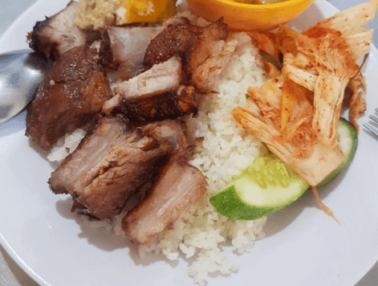
Địa chỉ: Quán này gần nhà điều hành nha các bạn, một quán gần UEL và một quán gần Đại Học Khoa Học Tự Nhiên.
$ Giá: 25.000 đồng - 30.000 đồng.
Theo Ngọc Hà
2. Quán cơm Green
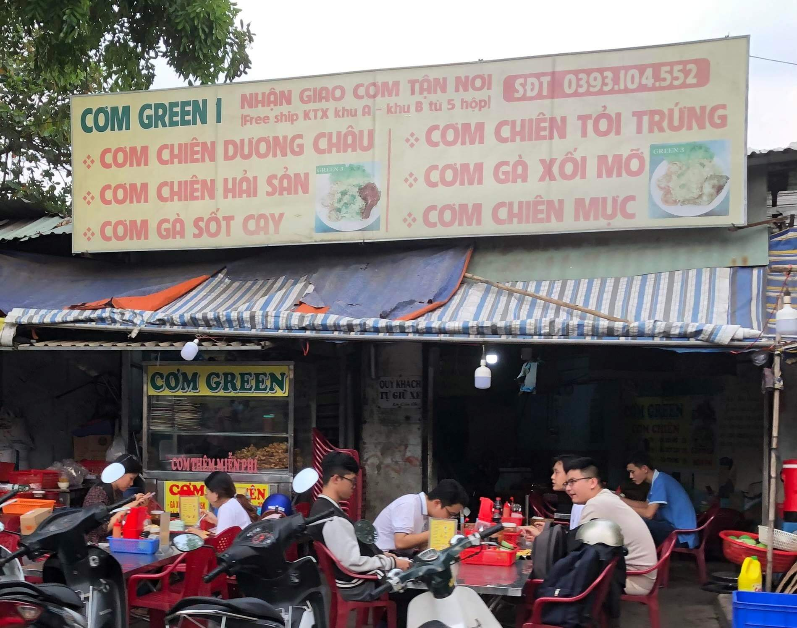
Quán nằm gần ngay Nhà điều hành. Điều làm ấn tượng về quán không chỉ món ăn mà còn nằm ở cả nước sốt. Đặc biệt nhất chính là nước sốt gà cay cay, quyện thêm vị chua chua, ngọt ngọt, màu nước sốt đậm đà vô cùng kích thích vị giác làm phải ăn nhiều cơm một tẹo. Ai đã đến quán này một lần thì chắc chắn sẽ quay lại lần thứ 2.
Menu của quán gồm có các món:
- Gà xối mỡ
- Gà sốt cay
- Cơm chiên Dương Châu
- Cơm chiên hải sản
- Cơm chiên mực chiên mắm
- Cơm chiên trứng
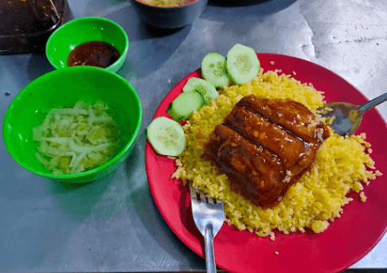
Địa chỉ: Tổ 6, khu phố 6, p. Linh Trung, Thủ Đức, gần nhà Điều hành.
$ Giá: 25.000 đồng - 35.000 đồng.
Theo Thùy Dương
3. Quán Bảo Ký
Quán cơm nằm ngay đường Vành đai ký túc xá khu B. Quán được biết đến với một menu có rất
nhiều món ăn vô cùng phong
phú và đa dạng. Quán tuy đông khách nhưng phục vụ nhanh chóng nên bạn sẽ không phải chờ lâu khi đến quán
đâu. Ngoài món
best seller là cơm gà xối mỡ thì bên cạnh đó món sườn chua ngọt cũng không kém cạnh.
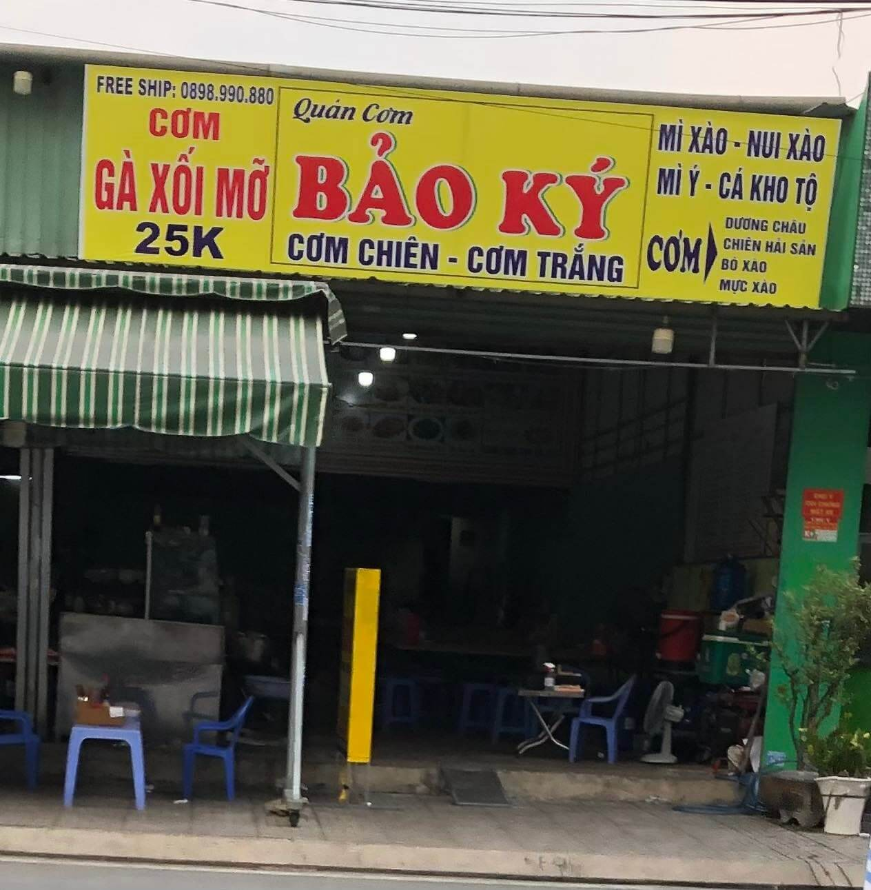
Không gian của quán cũng khá rộng rãi và nhiều chỗ. Ngoài ra quán còn có dịch vụ ship đến mọi ngóc ngách trong làng đại học nên bạn cũng có thể hoàn toàn ngồi tại chỗ và chờ mang đến thôi đó.
Địa chỉ: Đường Lương Định Của, Đông Hòa Dĩ An Bình Dương.
$ Giá: 25.000 đồng - 40.000 đồng.
Theo Ngọc Nhi
4. Lẩu chay Hoàng Đạt 2
Đây là 1 trong những quán lẩu chay đông đảo nhất làng. Nước lẩu đậm đà hương vị từ rau củ. Rau thêm, bún thêm, mì gói thêm đều miễn phí.
Các loại đồ uống đa dạng, giá chỉ từ 5k/ly bao gồm: Sữa đậu nành, sữa chua, chanh dây, nước ngọt các loại,…
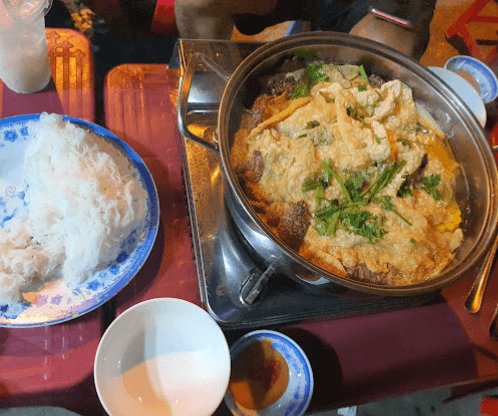
Quán có 5 chi nhánh. Đặc biệt chi nhánh trên đường Tô Vĩnh Diện là view ngòai trời nên khá thoang, mát
mẻ, chỗ ngồi cũng
rất rộng rãi. Còn gì tuyệt vời hơn khi chiều chiều ghé quán, làm một nồi lẩy chay đậm vị, cùng với gió
chiều thổi vi vu
mát mẻ nữa.
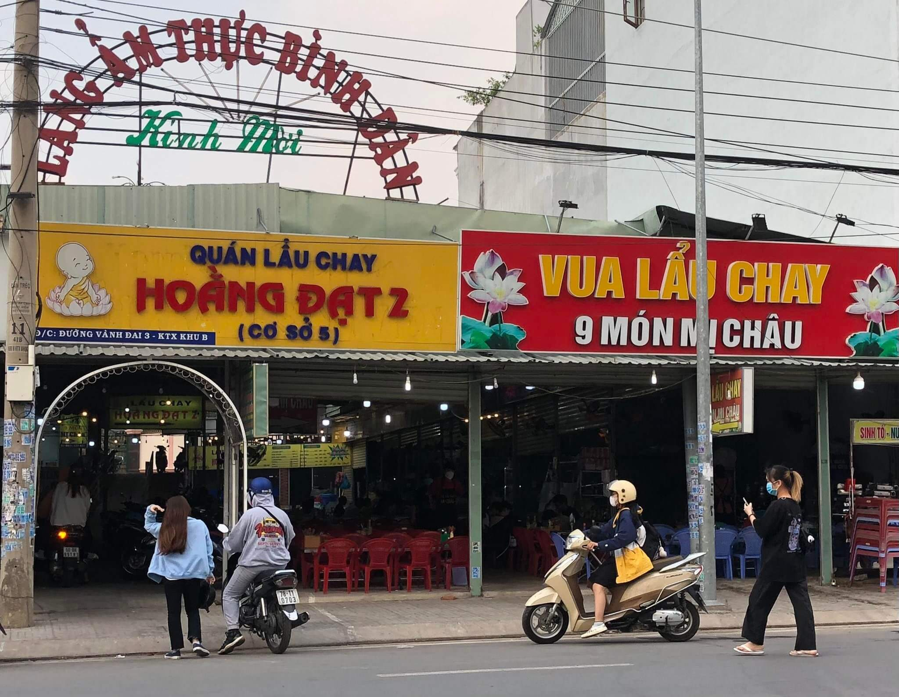
Địa chỉ:
Chi nhánh 1: đường Lương Định Của, Đông Hòa, Dĩ An, Bình Dương.
Chi nhánh 2: 84/4, Tô Vĩnh Diện, Đông Hòa, Dĩ An, Bình Dương.
$ Giá cả: Khoảng 40.000 đồng/người.
Theo Việt Hưng
5. Mỳ cay Sasin
Mì cay Sasin TP.HCM ở làng đại học là một trong những địa điểm mì cay yêu thích của sinh viên. Quán có 1
tầng, nằm ngay
mặt đường nên rất dễ tìm, bên cạnh đó quán có không gian rộng rãi và thoáng mát. Khu vực chỗ ngồi ăn tại
quán được bố
trí rất khoa học, gọn gàng đem lại sự thoải mái cho khách hàng. Nhân viên tại đây cũng rất nhiệt tình,
chu đáo và nhanh
nhẹn.
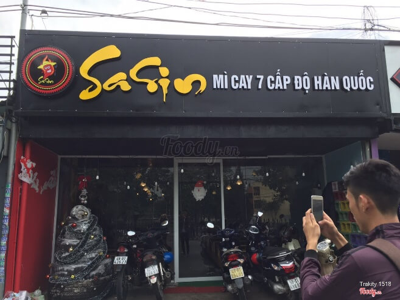
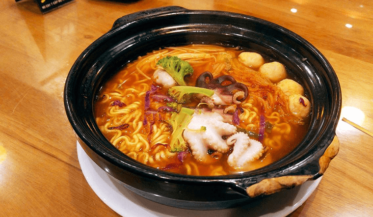
Ngoài một số món chính, menu tại đây có thêm một số món ăn Hàn Quốc nổi tiếng và quen thuộc đối với thực khách. Menu quán còn có cả nước uống như trà sữa, trà đào,… vô cùng hấp dẫn.
Địa chỉ : Đối diện Đại Học Khoa Học Tự Nhiên, Đường A2, Tp. Thủ Đức, TP. HCM
$ Giá: 20.000 đồng - 60.000 đồng.
Theo Di Hiền
6. Quán PaPa Xốt Singapore Food
Những món cơm, mì xèo xèo, nóng hổi, ngon không cưỡng luôn là những lời khen được thực khách ưu ái nói
về Quán cơm Xèo
nổi danh tại làng Đại Học.
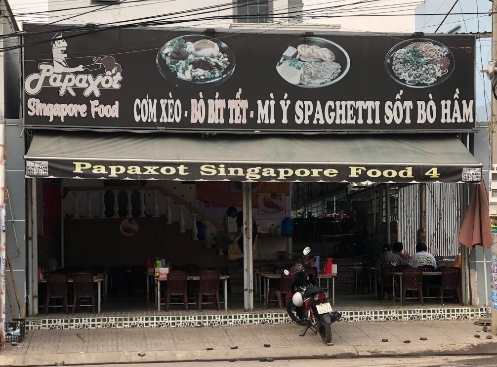
Menu thì phải nói là đa dạng miễn chê luôn. Cơm xèo bò, mì xèo, cơm xèo gà, cá hồi cho đến bò bít tết,
mì ý,...đủ loại.
Và đương nhiên đúng tên gọi của quán, khi những phần ăn được bưng đến tay thực khách, thì tiếng “xèo
xèo" luôn nổi bật.
Nhờ nó mà những món ăn tại quán thêm phần nào thú vị, tươi ngon. Đi kèm với món cơm thì cũng không thể
bỏ qua phần nước
sốt đậm đà , quyện vị và không kém phần hấp dẫn.
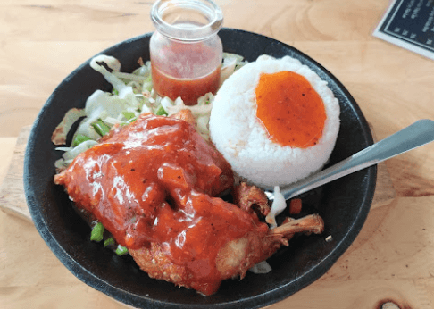
Địa chỉ: Quán nằm gần KTX khu B, đường Lương Định Của, Đông Hòa Dĩ An, Bình Dương
$ Giá: 30.000 đồng - 60.000 đồng.
Theo Khánh Gia
7. Bún đậu Box
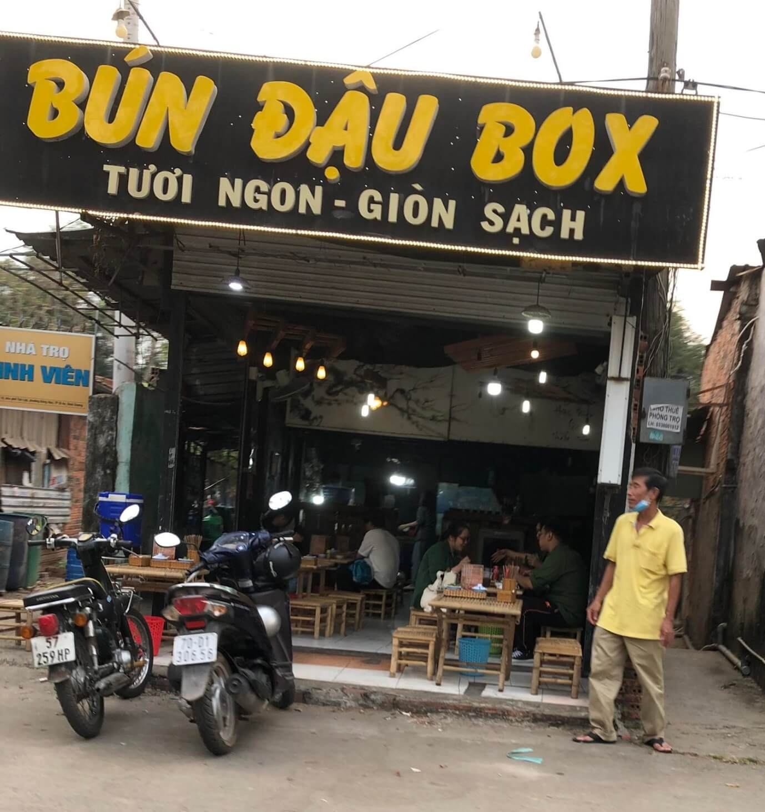
Nếu bạn ưng tìm một hàng bún đậu mắm tôm chỉ cần một cái búng tay có đủ đầy các món luôn thì đây chính
là lựa chọn hoàn
hảo dành cho bạn nè. Một mẹt ở đây có khá nhiều món: bún nén, thịt heo luộc, đậu hũ chiên giòn ngoài mềm
trong, chả cốm
chiên và dưa leo. Chả cốm ở đây là món khoái khẩu của mình, giòn giòn ngon cực nên mỗi lần ăn mình đều
phải gọi thêm một
phần. Phần hồn của món này nằm ở mắm tôm đó cả nhà ơi, cho một chút đường, chút tắc đánh bông mắm tôm
lên và cùng thưởng
thức thôi.
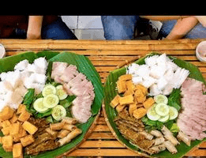
Địa chỉ: Đông hòa, Dĩ an, Bình Dương (đối diện nhà văn hóa sinh viên)
$ Giá: 25.000 đồng - 35.000 đồng.
Theo Ngọc Hà
8. Lẩu nướng - BBQ
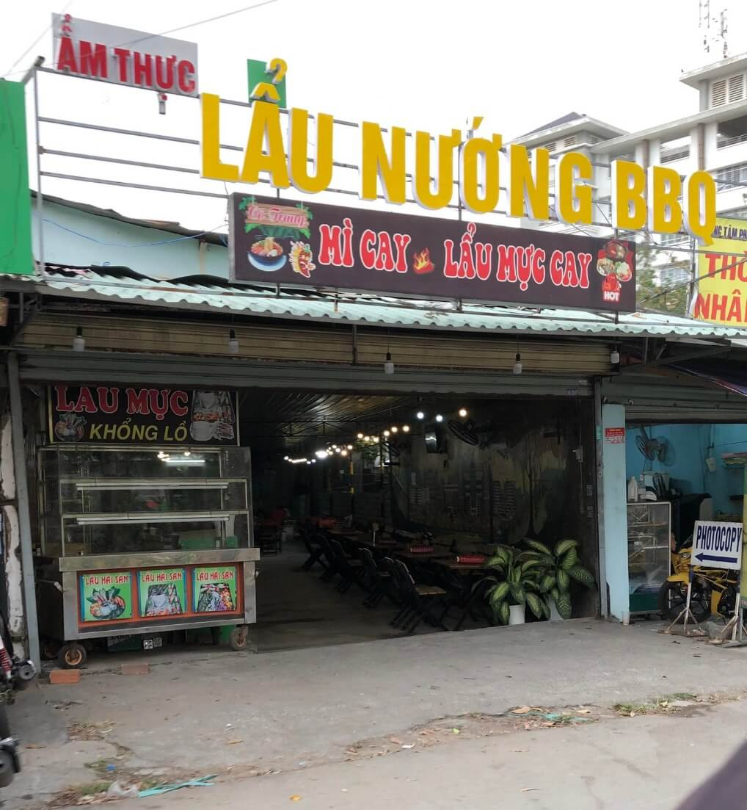
Là một quán ăn mới khai trương gần đây nhưng đã thu hút rất nhiều thực khách. Giờ cao điểm khoảng từ 16h
chiều đến 21h
tối khách đông đến mức mà các bạn nhân viên chạy không xuể. Nhưng các bạn sẽ không phải đợi lâu đâu vì
các món ăn luôn
được chuẩn bị rất nhanh. Điều mình rất thích ở quán là nước lẩu rất đậm đà và còn có rất nhiều rau xanh,
đối với một
người nghiện rau như mình thì đây là một điểm cộng. Nếu ngày nào ngán cơm quá thì quán lẩu nướng BBQ sẽ
là một lựa chọn
hoàn hảo cho bạn đấy!
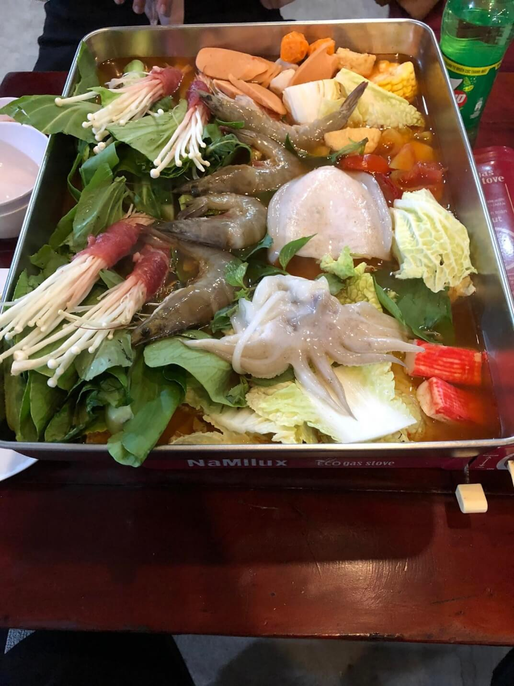
Địa chỉ: Đông hòa, Dĩ an, Bình Dương (đối diện nhà văn hóa sinh viên)
$ Giá: 169.000 đồng - 300.000 đồng.
Theo Ngọc Tân
9. Bún - Mì ốc hến
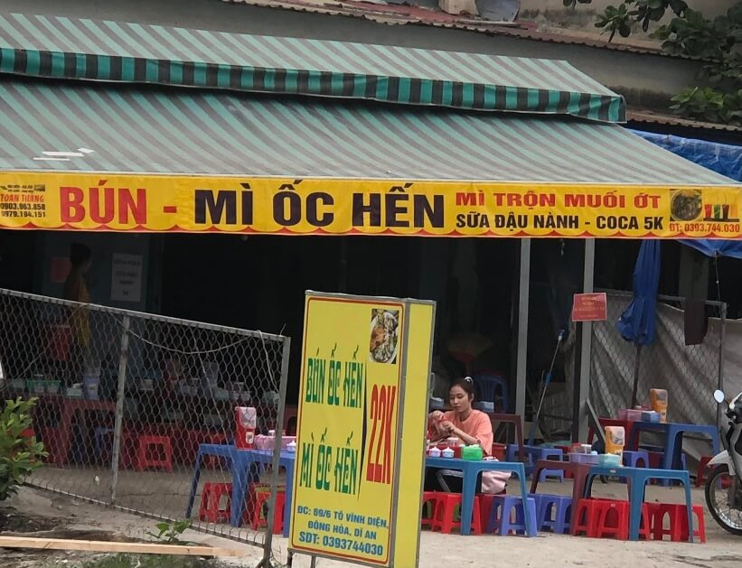
Cảm nhận đầu tiên là topping mỗi tô đầy ụ, tương tự nhau, màu sắc bắt mắt hơn người yêu cũ. Gồm có : 1
chiếc tôm tươi
bự, quá chừng ốc móng tay ăn không bị cát hay sạn và hến béo bùi bơ, mì gói sợi dai trong tô khá dư giả,
tỏi phi vàng
ươm cùng rau răm tạo hương vị đặc biệt, 1 chén mắm me chấm chấm cực kỳ hợp lý.
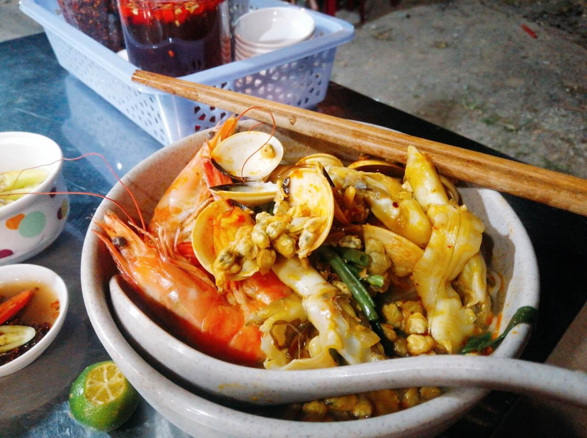
Địa chỉ: 69/6 Tô Vĩnh Diện, Đông Hòa, Dĩ An, Bình Dương
$ Giá: 22.000 đồng - 25.000 đồng.
Theo Ngọc Hà
10. Trà Sữa BoBaPop
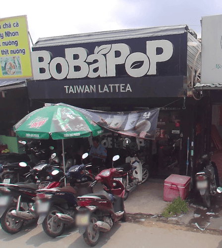
Nếu bạn là người “sành” trà sữa thì cái tên Bobabop dường không còn xa lạ. Thương hiệu trà sữa Bobapop “quyến rũ” các
bạn trẻ bởi phong cách phục vụ khá năng động. Ngoài nhu cầu thưởng thức tại chỗ, Bobabop còn phục vụ giao hàng tận nơi
cực kỳ nhanh chỉ sau 20 phút là bạn đã cầm trên tay ly trà sữa thơm ngon. Trà sữa BoBaPop với giá cả không quá rẻ và
cũng không quá đắt đối với sinh viên. Nhưng chất lượng thì luôn ổn định. Không gian yên tĩnh và mát mẻ với thiết kế hiện
đại, là nơi lý tưởng để chạy deadline phải không nào.
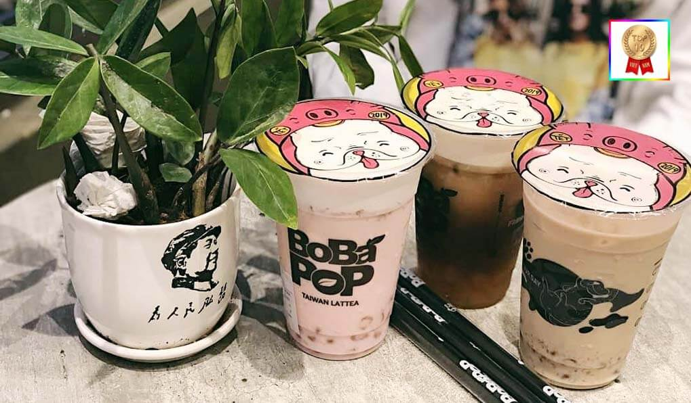
Địa chỉ:
Chi nhánh 1: Số 1/10 Ngã ba trường đại học Khoa Học Tự Nhiên
Chi nhánh 2: Số 8,9 đường 1 ĐH Nông Lâm.
$ Giá: 2.000 đồng - 55.000 đồng.
Theo Ngọc Nhi
11. Feel Coffee & Tea Express Làng đại học
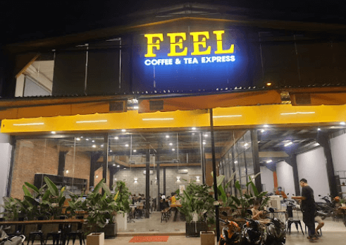
Với không gian yên tĩnh, rộng rãi, thoáng mát, hiện đại phù hợp cho nhóm bạn học tập hoặc làm việc. Đây cũng là một lựa chọn dành cho bạn nếu bạn muốn tìm kiếm một quán mở xuyên đêm để có thể chạy kịp deadline nữa đó. Tuy nhiên ghế của quán là ghế gỗ nên không có lớp lót nên không quá thoải mái cho việc ngồi lâu. Một điểm cộng giành cho quán là nhân viên phục vụ rất tận tình và chu đáo.
Thức uống của Feel được chế biến khá tỉ mỉ nên giá cả luôn giao động ở mức trung bình từ 30-50k. Nếu ai có khẩu vị thiên ngọt và nhẹ nhàng thì Feel chính là lựa chọn hàng đầu.
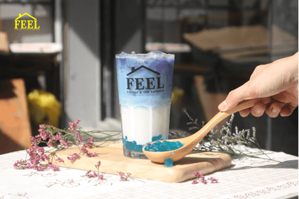
Quán mở cửa từ 7h- 23h
Địa chỉ:
Feel-A: số 82, Đường Vành Đai Đại học Quốc Gia, Tân Lập, Dĩ An, Bình Dương - 0974 020 790
Feel-B: Số 10 và 11 ĐH Nông Lâm, Linh Trung, Thủ Đức, HCM
$ Giá cả: 30.000 đông - 50.000 đồng
Theo Thùy Dương
12. Trà sữa Miss Tea Làng đại học
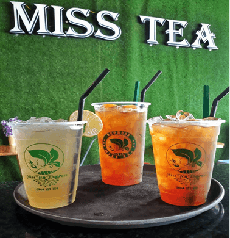
Miss Tea nổi tiếng với các thức uống như trà đào cam sả, trà đào, cam đào…Trà sữa Miss Tea rất vừa miệng, giá lại sinh viên. Giá giao động trung bình là 20k, bạn đã có ngay một ly trà sữa truyền thống thơm ngon, các loại thạch của Miss Tea cũng rất phong phú.
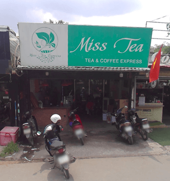
Không gian Miss Tea không quá rộng rãi nhưng sạch sẽ. Nhân viên nhanh nhẹn, dễ thương nên rất được các bạn sinh viên yêu thích.
Địa chỉ: Miss Tea cũng có 2 chi nhánh. Một ở gần trường KHTN, và một cái thì gần KTX khu B
$ Giá cả: 20.000 - 30.000
Theo Thùy Dương
13. Trà sữa Sky Làng đại học
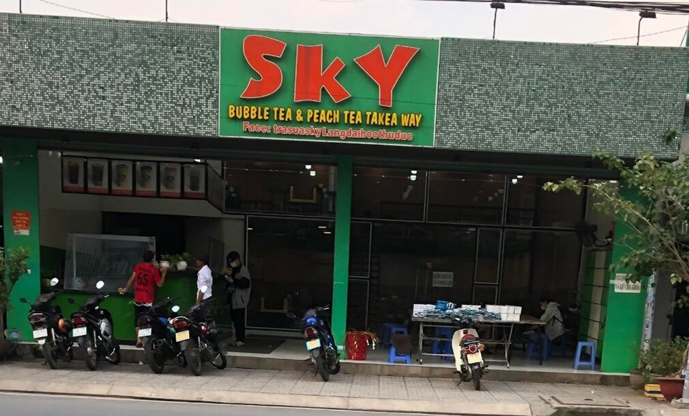
Lại một cái tên quen thuộc đối với các tín đồ trà sữa tại Làng đại học Thủ Đức. Chỉ mới xuất hiện chưa đầy 5 năm, Sky đã phát triển và mở rộng thành 3 chi nhánh. Thực đơn của Sky rất phong phú, có thể kể đến như các loại trà sữa, trà đào, yoshake, soda… Giá cả phải chăng, chất lượng tuyệt vời, “ngon, bổ, rẻ” .Không gian quán của Sky rất rộng rãi, thoáng đãng. Tuy nhiên vì đông khách nên quán khá ồn ào, nên Sky chỉ thích hợp cho những bạn đến đây để gặp gỡ, nói chuyện chứ không phải là nơi học bài lý tưởng.
Hiện có ba chi nhánh:
+ Trong chợ ĐH Bách Khoa gần ktx Khu A
+ Gần trường ĐH KH-XH & Nhân Văn tại chợ Tự Nhiên
+ Gần ktx Khu B
$ Giá: 12.000 - 35.000
Theo Khánh Gia
14. Tuva Food & Drink
Quán rộng rãi, thoáng mát và có một không gian riêng cho các bạn sinh viên có thể học nhóm.
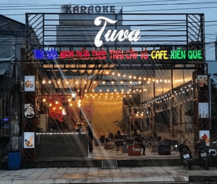
Địa chỉ: Đường Lương Định Của, Đông Hòa, Dĩ An, Bình Dương
$ Giá cả: 18.000 – 50.000
Theo Di Hiền
15. Yes cafe
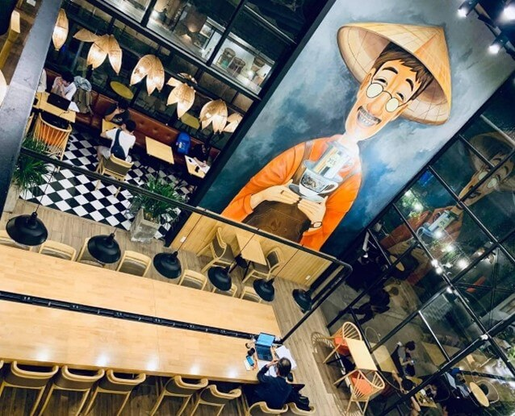
Với không gian siêu rộng cùng nhiều khu vực được thiết kế cho những sở thích khác nhau. Dù bạn muốn tìm một góc tĩnh lặng bên dãy cây xanh, hay một bàn lớn cho buổi họp nhóm, thậm chí là không gian ngoài trời dưới tán cây cổ thụ... Thì Yes đều có cả. Yes được biết đến là một quán mở thâu đêu với không gian 2 tầng rộng rãi, thoải mái, máy lạnh luôn chạy hết công suất chính là nơi lí tưởng để các bạn tránh cái nóng ở Sài thành.
Menu phong phú, đa dạng, sẵn sàng chiều lòng thực khách qua đêm cùng dàn nhân viên rất chi nhiệt tình và chu đáo luôn phục vụ 24/7 chính là điểm cộng lớn của Yes.
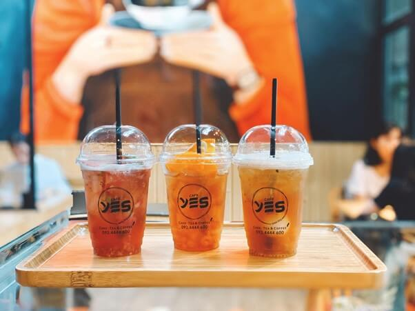
Địa chỉ: 23-25-27 đường N1, khu phố Tân Lập, Đông Hoà- Dĩ an Bình Dương.
$ Giá cả: 30.000 – 50.000
Theo Việt Hưng